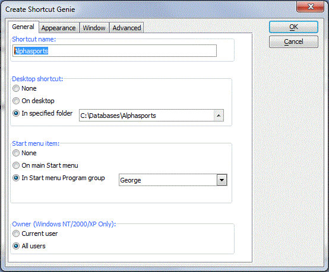

Using the Shortcut Genie
The Create Shortcut Genie creates a shortcut to load Alpha Five and start a particular database. You can place the shortcut on the Start menu, in a particular group, or on the desktop. The Create Shortcut Genie lets you specify your own splash screen, title, and icon for the Alpha Five program window, and also to specify special flags, such as whether the Alpha Five window should be opened minimized or maximized and whether the user should be able to resize the main Alpha Five window.
To open the Create Shortcut Genie, select Tools > Create Shortcut.

To create a shortcut:
Enter a name into the Shortcut name field.
Make a selection for the location of the shortcut. The options are:
None (the entry may still be in the Start Menu)
On desktop
In specified folder
If you selected "In specified folder" in step 2, click
 to navigate to
and select the destination folder.
to navigate to
and select the destination folder.Make a selection for the location of the Start Menu entry. The options are:
None
On main Start menu
In Start menu Program group
If you selected "In Start menu Program group" in step 4, enter the name of the program group or click
to select one from the list.Optionally, change the shortcut's owner to Current User. This option is available for Windows NT/2000/XP users only.
Display the Appearance tab.
Optionally, click Use custom title and specify the title of the main Alpha Five window.
Optionally, change the Alpha Five splash screen. The options are:
No splash screen
Custom bitmap
If you selected "Custom bitmap" in step 9, click
 to navigate to and select
a bitmap.
to navigate to and select
a bitmap.Optionally, change the Alpha Five icon. The options are:
No splash screen
Custom icon
If you selected "Custom icon" in step 11, click
to navigate to and select as icon.Display the Window tab.
Optionally, change the size of the main Alpha Five window. The options are:
Default - previous size of main Alpha Five window
Maximized
Minimized
If you want to restrict the user's ability to manipulate the size of the main Alpha Five window, check Disable ability to minimize or maximize.
If you want to restrict the user's ability to close the main Alpha Five window, check Open Alpha Five without a system menu.
Display the Advanced tab.
Enter any Xbasic commands that should be executed when Alpha Five is started from the shortcut. This code executes after the autoexec script, if you have one.
To display an initial or startup form, refer to Creating and Assigning a Startup Form.
See Also
Command Statements, The Autoexec Global Script